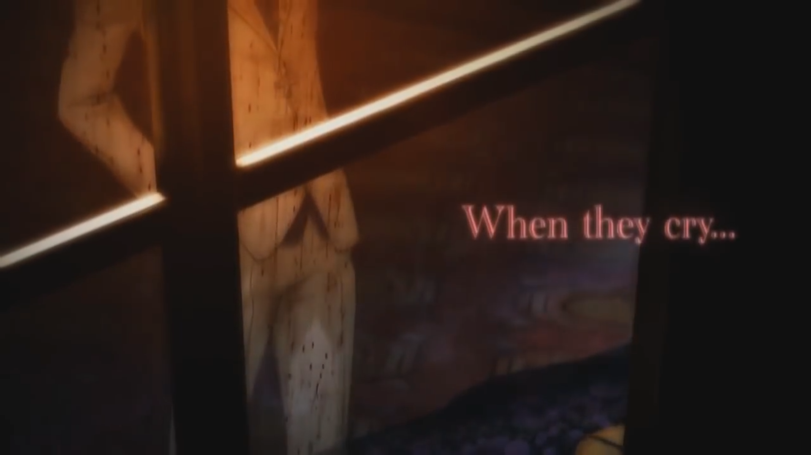
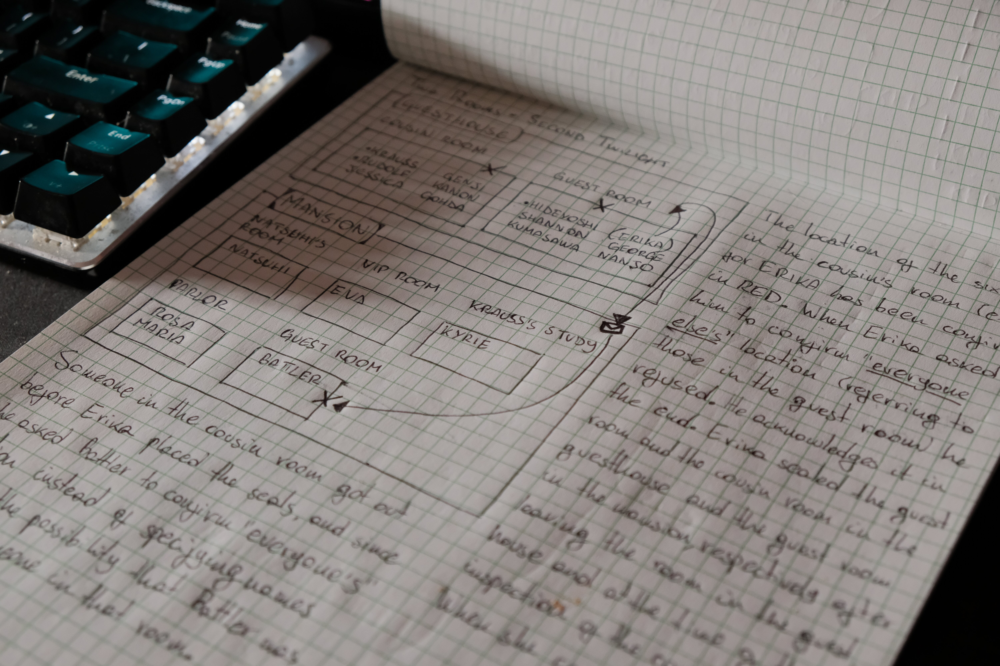
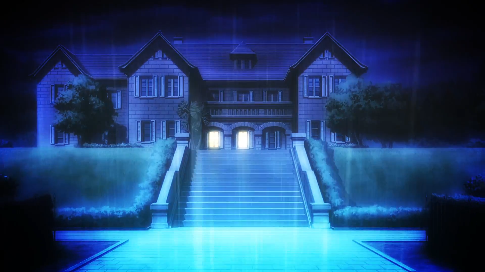
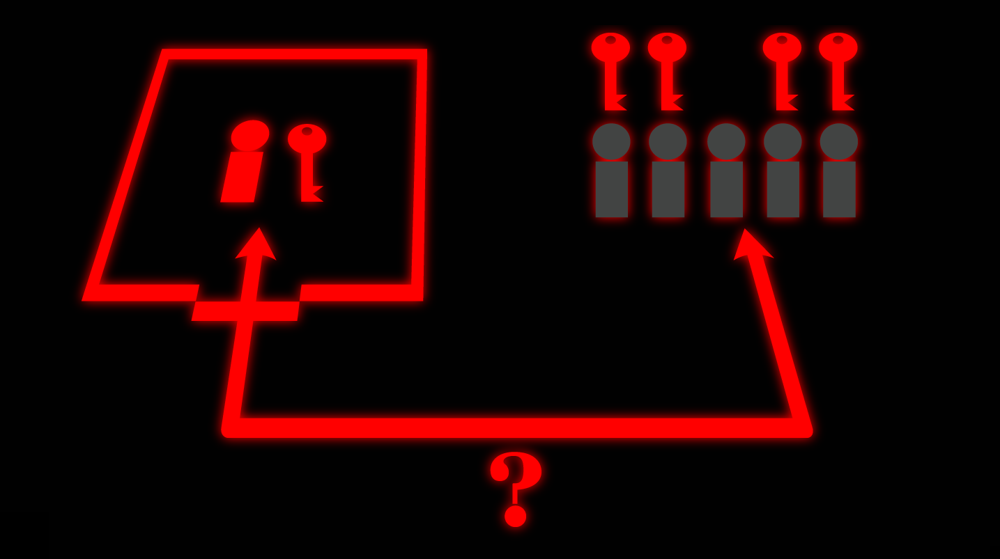
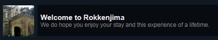
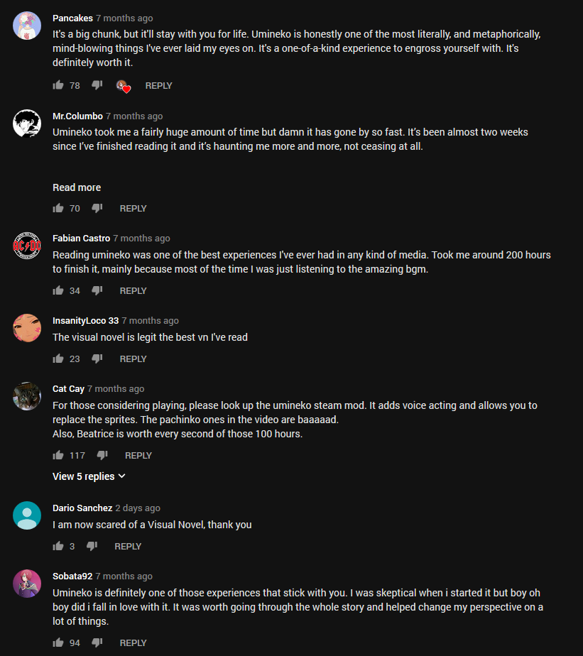

Umineko When They Cry
Sooo, about a month ago I finished reading Umineko When They Cry and ever since I've been wanting to write something about it.
Note that this is the first time I draft something semi-serious in a LONG time, I'm pretty sure the last time I wrote something unironically was when I handed in my high school finals.
Well okay, I guess I should first give a brief introduction to what this is all about.

On the surface level this story is about a group of rich corporate wall street fat cats that decides to have a family reunion on the private island they own; little did they know,
a mysterious series of murders will take place on this very island. This is where it gets interesting.
Since the very beginning of the story you're introduced to the legend of a witch that supposedly lives on this island (the chick in the painting on the right, that is).
So the whole thing boils down to this: since there's no way that witches are real (r-right?) you need to prove that these murders are the work of a human using tricks, rather than a witch using magic.
How hard can it be?
Put on your Sherlock hat and start investigating.
Now, the game isn't actually "a game", since it literally plays itself, you really just have to read as the story unfolds without you doing anything...
but if you don't want to be just an onlooker and play the VN how you're supposed to (the game will literally break the 4th wall to tell you this),
you'll need to take notes and make your own theories, but here's the catch...

The game will throw you evidence, fake evidence and circumstantial evidence to deceive you and throw your mind into disarray.
There will be lots of baits and red herrings, and even though at some point you'll start expecting all kinds of twisted ploys you will still fall for them hook, line and sinker every time.
Sometimes you'll be sharper than the characters, sometimes it will be the other way around, but it'll be very hard for anyone to be one step ahead of the witch.
There is no gameplay except the one that you create yourself, it's a battle of wits between you and the witch (actually, more than a battle it's a one-way massacre ), shrewdness is your weapon and logic is your shield.
The game knows exactly how smart you are, when you think you finally figured out something important you'll find yourself caught again in the witch's puppet-strings (or should I say... cobweb?),
and every time this happens you'll be forced to readjust all your belied theories and find another angle to approach the riddles.
There are so many paths and threads to follow that you just become lost in this labyrinth of wild speculative theories that you constructed yourself.
As the game progresses you start building the layout of the mansion in your mind, wondering if character X could be in place Y at time Z, if the killer acts alone or if he's in cahoots with other characters,
trying to understand how a corpse was moved in such a short amount of time, looking for a way to untangle this clew of nonsense making use of every little bit of proof you gleaned by reading between the lines in a dialogue.

This image serves literally no purpose other than breaking the wall of text. Anyway this is the mansion where all the stuff takes place, after 200 hours spent reading stuff that happened here you'll learn to love/hate every nook and cranny of it.
It may look like an impossible feat (and now that I know what the truth is, it really seems hopeless to me for a new reader to figure it out by himself), but it's not unfair.
The game will always give you all the evidence and clues you need in order to unveil the truth.
It's technically possible to solve every mystery in the game by yourself,
you just need to dive into the jumbled mess of clues and alibis that you're given and pinpoint what is really useful (pro tip: basically all of it, in one way or another) and how.
By the end of it you'll often realize that the answer to the riddles was right in front of you, hidden in plainsight, most of the time.
However, the more complex, clever and meticulously orchestrated a plot is, the more exceptional the writing that backs it up needs to be, otherwise it will inevitably fail to deliver.
Luckily Ryukishi knows exactly how to create anticipation and keep the reader enthralled with his narration: the way the game builds and releases tension is pure genius, it keeps alternating between happy-go-lucky,
meek, funny scenes and absurdly violent, unsettling ones that will make your blood curdle (I'm not even exaggerating, some parts were so brutal and disturbing I actually winced).
The whole story is a four-way pendulum that continuously swings between hype, horror, sadness and joy.
It's not a forgiving novel, almost every time you go soft it will make you rue your naïveté, to the point where you'll doubt every good thing that happens, until the very end.

You can feel your IQ increasing just by looking at this screenshot.
Supporting all of this there's a myriad of characters, every single one of them being three-dimensional, with a backstory, a unique personality and there's always more to them than it shows at first glance.
Throughout the game you'll learn more and more about every member of the cast and you'll find yourself wavering between love, hate and sometimes even both at the same time.
As for the soundtrack, it's simply out of this world, many tracks are even more famous than the VN itself.
It features a wide variety of genres, it changes dramatically from peaceful, cheerful tunes to creepy and melancholic ones,
some of the tracks are absolute bangers and some others are depressing and gloomy.
Each one adds so much to the atmosphere it's unreal, it's probably the reason why When They Cry is defined as a sound novel, instead of a visual novel.
Shilling time: if you want to give a listen to some tracks handpicked by me you can check out this youtube playlist -
essential /uminekocore/
But this is really just scratching the surface, it's such a complex and massive piece of work
(about 3.035 pages if you convert it to Verdana 12.0 font) that no review can do it justice.
I remember when I first opened the game and I got this achievement

I obviously thought "yeah right, let's not get ahead of ourselves".
...but now that I finished it I'm not so sure anymore. If you open literally any youtube video about Umineko, you'll find lots of comments like these.

It's crazy how captivating it is, basically everyone that reads it regards it as their favourite piece of literature and a life-changing experience.
From the moment I started the second game, Umineko was the first thought on my mind when I woke up in the morning and my last thought at night.
This novel really sticks with you, I still think about it every single day on some level.
Well I guess i fell for the meme, but I'm glad I did.
I think that's enough shilling for now.
What can I say, read Umineko, peace.
Also, the Umineko memes are absolutely top-tier, I guess that's one more thing to look forward to.
All the pictures in this page are taken directly from the game, I have no idea who do they belong to, but they sure as hell don't belong to me.